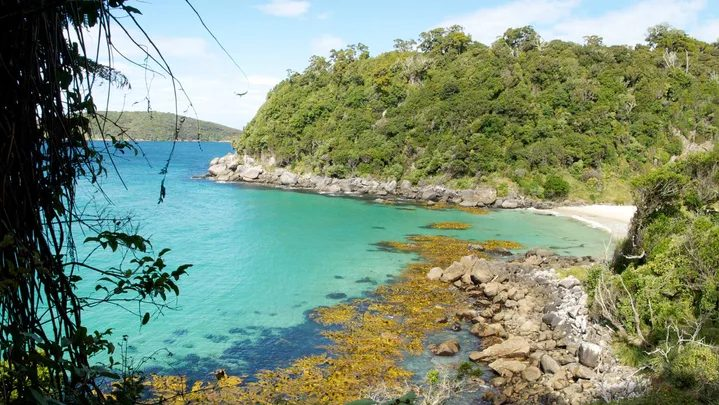

Plants and animals
Vegetation

Rakiura Stewart Island still looks much as the mainland would have prior to human settlement, with forest growing down to the sea. As botanist Leonard Cockayne noted in 1909, ‘it is an actual piece of the primeval world’.1 The natural sequence of one type of vegetation giving way to another as the land rises from coast to mountain top has not been interfered with. More than half the land is covered by podocarp and hardwood forests, with rimu, miro, kāmahi and southern rātā dominating.
Many native plant species common in Southland are, surprisingly, naturally absent on the island (although some have been planted around Halfmoon Bay). These include beech species, kaikawaka, kōwhai, tarata (lemonwood), māhoe, kānuka and raupō. Botanists think that the absence of beech is related to past glaciations, but puzzle over the absence of many of the other species.
Struck by the scenery
Botanist Leonard Cockayne spent years studying the island’s botany and came under its spell: ‘It is hard to speak of the scenery of Stewart Island without using a superabundance of superlatives.’2
Coastal shrub lands ring the shoreline. The tree daisy species puheretaiko and tētēaweka form the ‘muttonbird scrub’ that is common along the rocky coastline. Leatherwood, a hardy shrub with big shiny leaves, is found in alpine areas above which are the open tussock lands and herb fields.

There are 21 endemic alpine plant species, including mountain buttercups, speargrass, tussock and mountain daisies. The highlands are free of weeds, with no introduced plants.
The dune lands of the exposed wild west coast beaches are exceptional. At Mason Bay they extend back kilometres into the bush and scrublands. The distinctive orange native grass pīngao helps to bind the dunes.
Some 70% of the seaweed species found around Rakiura Stewart Island occur in Paterson Inlet/ Whaka ā Te Wera.
Animal life
Birds prosper on the island, in large part due to the absence of introduced predators. So, unfortunately, do sandflies, as many visitors discover. There are no mustelids (stoats, ferrets and weasels) on the island, nor are there goats, rabbits, pigs or mice.

The southern tokoeka, or Rakiura kiwi, is thriving with an estimated population of 15,000 in the 2010s. The birds are primarily nocturnal, but feed in daylight more often than other kiwi species. They range from beaches to open alpine tops. Stewart Island weka exist now only on offshore islands within Rakiura National Park, such as Ulva Island.
Kākāpō would probably be extinct if it was not for the survival of a remnant population in the Tin Range, which was discovered in the 1970s. The population was relocated and most kākāpō are now found on Whenua Hou/Codfish Island off Stewart Island’s west coast. Kākā, and red-crowned and yellow-crowned parakeets (kākāriki) are commonly seen around Halfmoon Bay.
The harlequin gecko is largely confined to southern Rakiura.

Along the coast three penguin species – little, Fiordland crested and hoiho (yellow-eyed penguins) – breed. Having all three breeding on one coastline is rare. Several shag species nest on the shoreline and New Zealand fur seals breed – mostly on offshore islands, but also at some sites on the coast. The threatened New Zealand sea lion visits much of the coastline and has a small breeding colony at Port Pegasus/Pikihatiti.
Giant kōkopu, banded kōkopu, longfin eels, redfin bully, giant bully and lamprey are all found in the Freshwater and Rakeāhua rivers. Three species of non-migratory fish are also found on the island – the upland bully, southern flathead galaxias and gollum galaxias – the last of which was first described on Rakiura.
Kina (sea urchins), sea cucumbers and starfish thrive on rocks, sand and mud in Paterson Inlet. It also nourishes many marine fish species. Brachiopods, the most ancient of filter-feeding shellfish, live both on rock and sediment, thriving at depths of less than 20 metres.
Footnotes
- Quoted in John Hall-Jones, Stewart Island explored. Invercargill: Craig Printing, 1994, p. 139.
- L. Cockayne, Report on a botanical survey of Stewart Island. Wellington: Government Printer, 1909, p. 41.
Walrond, C. (2015, May 1). Stewart Island/Rakiura: Plants and animals. Te Ara – The Encyclopedia of New Zealand. https://teara.govt.nz/en/stewart-islandrakiura/page-2